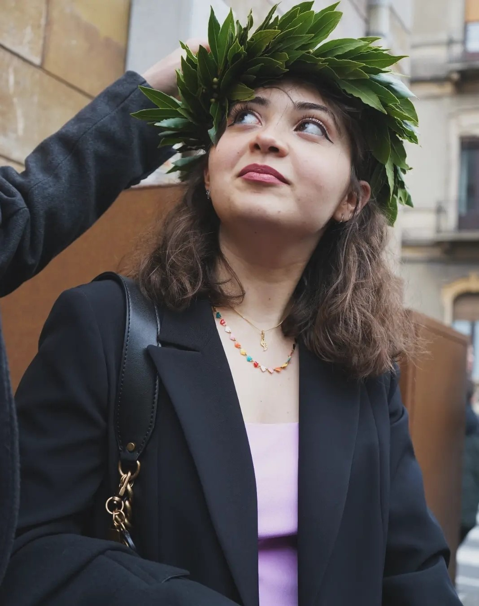

CHI SONO

Laura Brisindi
Laureata in Filosofia all'Universita' di Catania, studio adesso Scienze del Testo per le Professioni Digitali.
Appassionata lettrice, ho sempre creduto nel potere delle parole e nella necessita' di usarle con attenzione.
Interessata alla politica, ai diritti e alle questioni sociali, da un po' di tempo ho avvertito il bisogno di dare un
contributo piu' attivo che fosse in linea con le mie passioni e le mie capacita'.